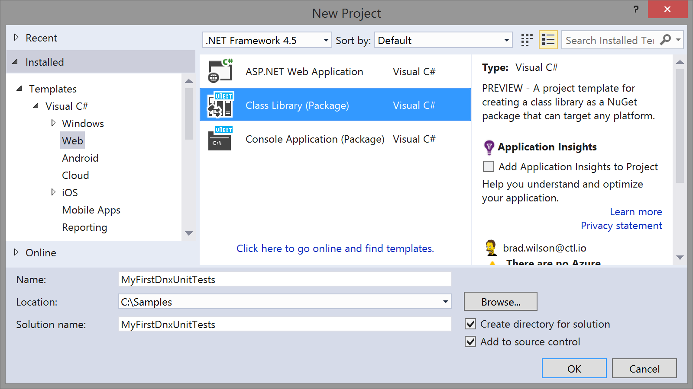
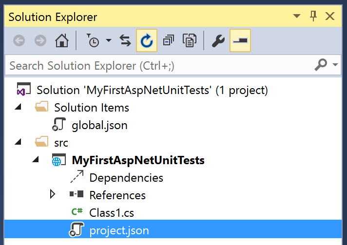
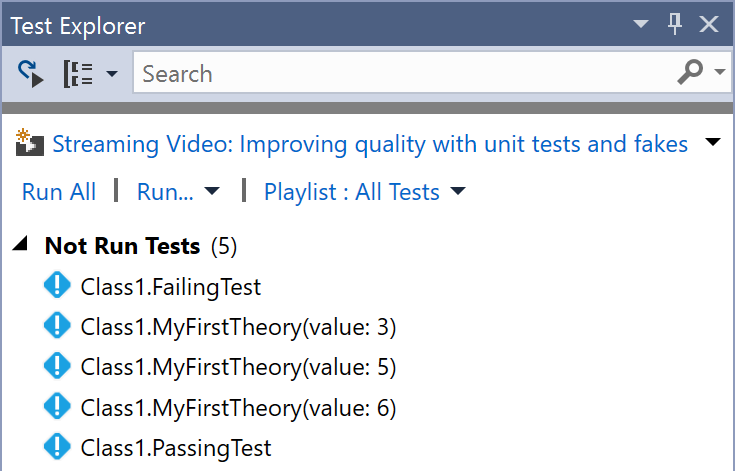
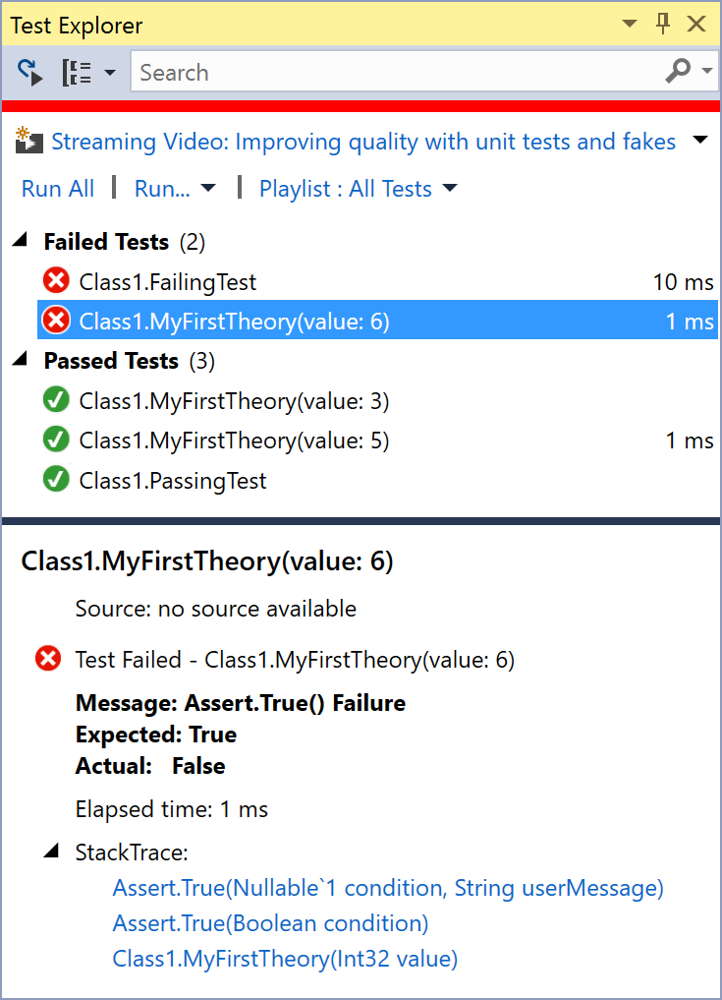

In this article, we will demonstrate getting started with xUnit.net, showing you how to write and run your first set of unit tests for your DNX applications.
Note: Specific versions of xUnit.net only support specific versions of DNX. The examples shown here are done with xUnit.net 2.1 RC 1, xUnit.net DNX runner 2.1 beta 5, and DNX 1.0 beta 7. The version compatibility list is:
| DNX version | xunit packages | xunit.runner.dnx package | Execution command |
|---|---|---|---|
1.0.0-beta4 |
2.1.0-beta2-build2981 |
2.1.0-beta2-build79 |
dnx path test |
1.0.0-beta51.0.0-beta6 |
2.1.0-beta3-build3029 |
2.1.0-beta3-build99 |
|
1.0.0-beta7 |
2.1.0 |
2.1.0-beta5a-build188 |
dnx test ordnx -p path test |
1.0.0-beta8 |
2.1.0-beta6-build191 |
||
1.0.0-rc1-final |
2.1.0-rc1-build204 |
dnvm list in your shell (or
check global.json in Visual Studio) to validate that you are using the
right DNX versions.
Let's start by creating a class library project, targeting .NET 4.5 (or later). Open
Visual Studio, and choose File > New > Project:

In Solution Explorer, find and open the project.json file:

Add dependencies on the xunit and xunit.runner.dnx packages, as
well as the test command, as shown below:
net451 and
dotnet5.4 frameworks in your project.json file. Unit tests are a special
kind of platform-specific class library, so you must use the dnx451 and dnxcore50
framework names when writing unit tests; otherwise, the xunit.runner.dnx dependency
will cause package restore failures.
When you created the project, Visual Studio automatically created a file named Class1.cs
and opened it for you. Inside this class, add a couple tests:
Build the solution to ensure that the code compiles. Now that you've written the first test, we need a way to run it.
Open a command prompt or PowerShell command window. In the window, navigate to folder
containing the source code of your test project (this will usually be in a folder below
the src folder, in your solution folder).
To run the DNX runner, type dnx test, as shown below:
> dnx test xUnit.net DNX test runner (32-bit DNX 4.5.1) Copyright (C) 2015 Outercurve Foundation. Discovering: MyFirstDnxUnitTests Discovered: MyFirstDnxUnitTests Starting: MyFirstDnxUnitTests MyFirstDnxUnitTests.Class1.FailingTest [FAIL] Assert.Equal() Failure Expected: 5 Actual: 4 Stack Trace: Class1.cs(16,0): at MyFirstDnxUnitTests.Class1.FailingTest() Finished: MyFirstDnxUnitTests === TEST EXECUTION SUMMARY === MyFirstDnxUnitTests Total: 2, Errors: 0, Failed: 1, Skipped: 0, Time: 0.130s
Now that we've gotten your first unit tests to run, let's introduce one more way to write tests: using theories.
You may have wondered why your first unit tests use an attribute named [Fact]
rather than one with a more traditional name like Test. xUnit.net includes support for
two different major types of unit tests: facts and theories. When describing the
difference between facts and theories, we like to say:
Facts are tests which are always true. They test invariant conditions.
Theories are tests which are only true for a particular set of data.
A good example of this testing numeric algorithms. Let's say you want to test an algorithm which determines whether a number is odd or not. If you're writing the positive-side tests (odd numbers), then feeding even numbers into the test would cause it fail, and not because the test or algorithm is wrong.
Let's add a theory to our existing facts (including a bit of bad data, so we can see it fail):
{% highlight C# %} [Theory] [InlineData(3)] [InlineData(5)] [InlineData(6)] public void MyFirstTheory(int value) { Assert.True(IsOdd(value)); } bool IsOdd(int value) { return value % 2 == 1; } {% endhighlight %}This time when we compile and run our tests, we see a second failure, for our theory that was given 6:
xUnit.net DNX test runner (32-bit DNX 4.5.1) Copyright (C) 2015 Outercurve Foundation. Discovering: MyFirstDnxUnitTests Discovered: MyFirstDnxUnitTests Starting: MyFirstDnxUnitTests MyFirstDnxUnitTests.Class1.FailingTest [FAIL] Assert.Equal() Failure Expected: 5 Actual: 4 Stack Trace: Class1.cs(16,0): at MyFirstDnxUnitTests.Class1.FailingTest() MyFirstDnxUnitTests.Class1.MyFirstTheory(value: 6) [FAIL] Assert.True() Failure Stack Trace: Class1.cs(30,0): at MyFirstDnxUnitTests.Class1.MyFirstTheory(Int32 value) Finished: MyFirstDnxUnitTests === TEST EXECUTION SUMMARY === MyFirstDnxUnitTests Total: 5, Errors: 0, Failed: 2, Skipped: 0, Time: 0.176s
Although we've only written 3 test methods, the console runner actually ran 5 tests; that's because each theory with its data set is a separate test. Note also that the runner tells you exactly which set of data failed, because it includes the parameter values in the name of the test.
The same NuGet package which allows you to run tests from the console also allows you to
run tests from within Visual Studio. Show the Test Explorer window by choosing
Test > Windows > Test Explorer. The Test Explorer window will
show inside Visual Studio, and your test should be visible (if they're not, try
building your project to kick off the test discovery process). It should look something
like this:

If you click the Run All link in the Test Explorer window, it will run your
tests and show you success and failure. You can click on an individual test result to
get failure information as well as stack trace information:

The following return codes are used by the console runner:
| Return code | Meaning |
|---|---|
0 |
The tests ran successfully. |
1 |
One or more of the tests failed. |
2 |
The help page was shown, either because it was requested, or because the user did not provide any command line arguments. |
3 |
There was a problem with one of the command line options passed to the runner. |
4 |
There was a problem loading one or more of the test assemblies (for example, if a 64-bit only assembly is run with the 32-bit test runner). |